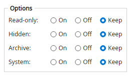

Magic File Renamer Help
Attributes Setter

Filter options.
Sets or clears filesystem attributes (not the file name).
- Flags: read-only, hidden, archive, and system.
- Each attribute uses Set, Clear, or Keep.
Options
- Read-only / Hidden / Archive / System — Set, Clear, or Keep for each flag.